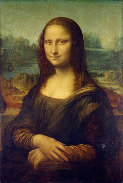

Картинная галерея портретов
 Франциск |
Франциск |

“Мона Лиза”
Во всем мире знаменита своей загадочной улыбкой Мона Лиза - одна из немногочисленных картин величайшего художника итальянского возрождения Леонардо да Винчи. Имя портретируемой не удалось установить до сих пор, иногда даже ведутся споры о том, кого в действительности изобразил живописец, мужчину или женщину, однако все это отступает на задний план перед удивительным мастерством исполнения этой картины, с ее легкой воздушной дымкой, окутывающей фигуру и ландшафтную среду. В основе портрета лежит ренессансный принцип композиции, но красота его достигнута прежде всего благодаря изобретенной художником особой технике масляной живописи (известной под названием sfimato), которая позволила передавать едва уловимые переходы от света к тени в трактовке формы и пространства, что было бы невозможно с помощью темперы, обычно используемой живописцами того времени. Проявлявший одинаковый интерес к анатомии, инженерному делу, научным проблемам и аэронавтике Леонардо на протяжении своей жизни завершил невероятно мало картин. К счастью, сохранилось множество рисунков и манускриптов мастера с чертежами и зарисовками, свидетельствующих об уникальности его гения.
 “Шоколадница”
“Шоколадница”